try:
import astra
except ModuleNotFoundError:
%pip install -U git+https://github.com/sustainability-lab/ASTRAGoals:
G1: Given probability distributions \(p\) and \(q\), find the divergence (measure of similarity) between them
Let us first look at G1. Look at the illustration below. We have a normal distribution \(p\) and two other normal distributions \(q_1\) and \(q_2\). Which of \(q_1\) and \(q_2\), would we consider closer to \(p\)? \(q_2\), right?

To understand the notion of similarity, we use a metric called the KL-divergence given as \(D_{KL}(a || b)\) where \(a\) and \(b\) are the two distributions.
For G1, we can say \(q_2\) is closer to \(p\) compared to \(q_1\) as:
\(D_{KL}(q_2 || p) \lt D_{KL}(q_1 || p)\)
For the above example, we have the values as \(D_{KL}(q_2|| p) = 0.07\) and \(D_{KL}(q_1|| p)= 0.35\)
G2: assuming \(p\) to be fixed, can we find optimum parameters of \(q\) to make it as close as possible to \(p\)
The following GIF shows the process of finding the optimum set of parameters for a normal distribution \(q\) so that it becomes as close as possible to \(p\). This is equivalent of minimizing \(D_{KL}(q || p)\)
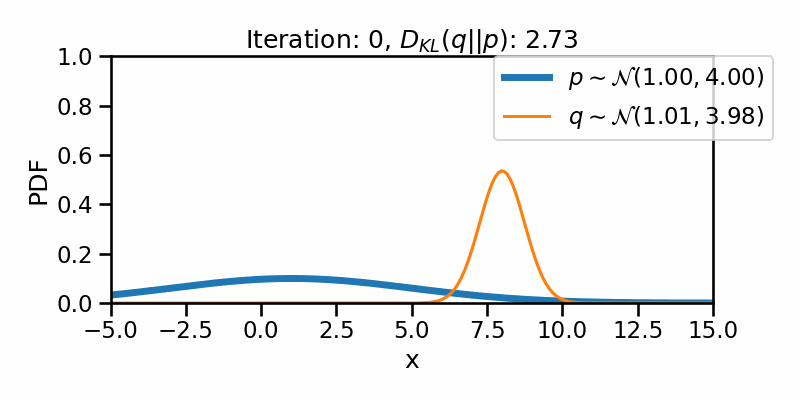
The following GIF shows the above but for a two-dimensional distribution.

G3: finding the “distance” between two distributions of different families
The below image shows the KL-divergence between distribution 1 (mixture of Gaussians) and distribution 2 (Gaussian)
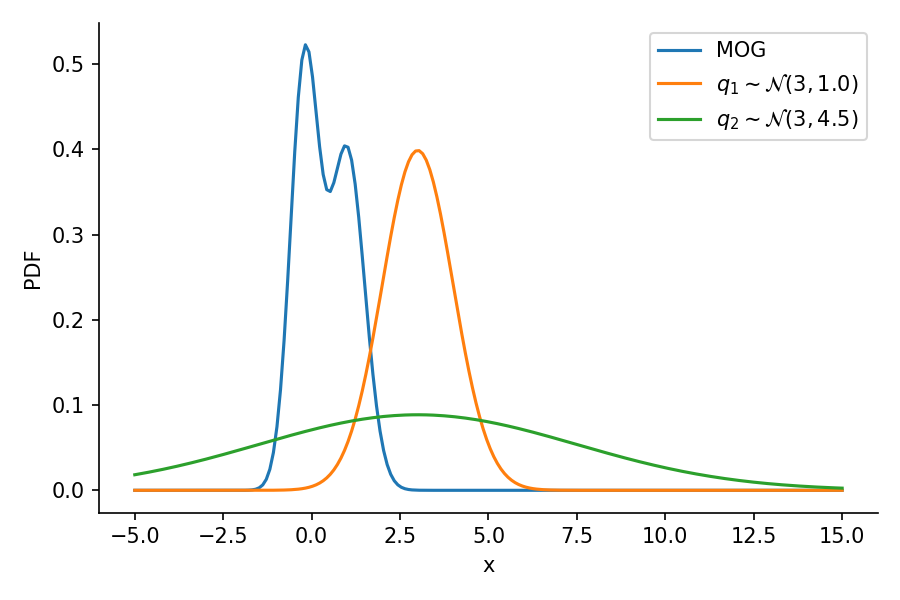
G4: optimizing the “distance” between two distributions of different families
The below GIF shows the optimization of the KL-divergence between distribution 1 (mixture of Gaussians) and distribution 2 (Gaussian)

G5: Approximating the KL-divergence
G6: Implementing variational inference for linear regression
Basic Imports
import numpy as np
import matplotlib.pyplot as plt
import torch
import torch.nn as nn
import seaborn as sns
from ipywidgets import interact
from astra.torch.utils import train_fn
from astra.torch.models import AstraModel
dist =torch.distributions
# Default figure size for matplotlib
plt.rcParams['figure.figsize'] = (6, 4)
%matplotlib inline
%config InlineBackend.figure_format='retina'Creating distributions
Creating \(p\sim\mathcal{N}(1.00, 4.00)\)
p = dist.Normal(1, 4)z_values = torch.linspace(-5, 15, 200)
prob_values_p = torch.exp(p.log_prob(z_values))
plt.plot(z_values, prob_values_p, label=r"$p\sim\mathcal{N}(1.00, 4.00)$")
sns.despine()
plt.legend()
plt.xlabel("x")
plt.ylabel("PDF")Text(0, 0.5, 'PDF')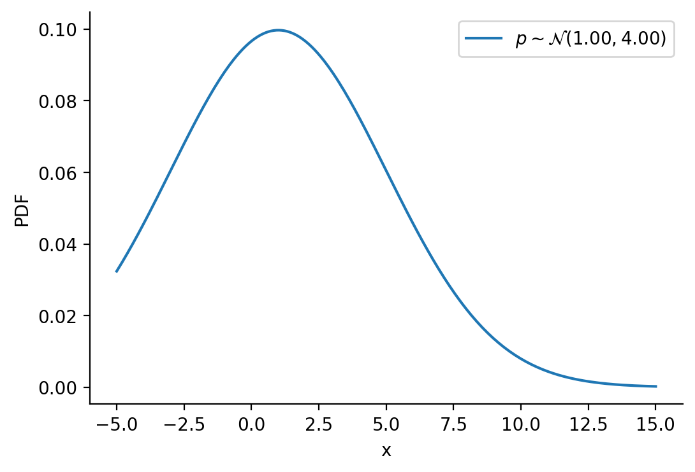
Creating \(q\sim\mathcal{N}(loc, scale)\)
def create_q(loc, scale):
return dist.Normal(loc, scale)Generating a few qs for different location and scale value
q = {}
q[(0, 1)] = create_q(0.0, 1.0)
for loc in [0, 1]:
for scale in [1, 2]:
q[(loc, scale)] = create_q(float(loc), float(scale))plt.plot(z_values, prob_values_p, label=r"$p\sim\mathcal{N}(1.00, 4.00)$", lw=3)
plt.plot(
z_values,
torch.exp(create_q(0.0, 2.0).log_prob(z_values)),
label=r"$q_1\sim\mathcal{N}(0.00, 2.00)$",
lw=2,
linestyle="--",
)
plt.plot(
z_values,
torch.exp(create_q(1.0, 3.0).log_prob(z_values)),
label=r"$q_2\sim\mathcal{N}(1.00, 3.00)$",
lw=2,
linestyle="-.",
)
plt.legend(bbox_to_anchor=(1.04, 1), borderaxespad=0)
plt.xlabel("x")
plt.ylabel("PDF")
sns.despine()
plt.tight_layout()
plt.savefig(
"dkl.png",
dpi=150,
)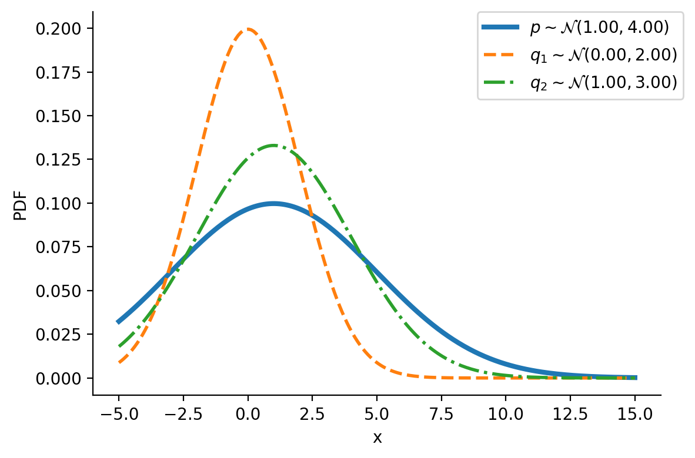
#### Computing KL-divergence
q_0_2_dkl = dist.kl_divergence(create_q(0.0, 2.0), p)
q_1_3_dkl = dist.kl_divergence(create_q(1.0, 3.0), p)
print(f"D_KL (q(0, 2)||p) = {q_0_2_dkl:0.2f}")
print(f"D_KL (q(1, 3)||p) = {q_1_3_dkl:0.2f}")D_KL (q(0, 2)||p) = 0.35
D_KL (q(1, 3)||p) = 0.07As mentioned earlier, clearly, \(q_2\sim\mathcal{N}(1.00, 3.00)\) seems closer to \(p\)
Optimizing the KL-divergence between q and p
We could create a grid of (loc, scale) pairs and find the best, as shown below.
plt.plot(z_values, prob_values_p, label=r"$p\sim\mathcal{N}(1.00, 4.00)$", lw=5)
for loc in [0, 1]:
for scale in [1, 2]:
q_d = q[(loc, scale)]
kl_d = dist.kl_divergence(q[(loc, scale)], p)
plt.plot(
z_values,
torch.exp(q_d.log_prob(z_values)),
label=rf"$q\sim\mathcal{{N}}({loc}, {scale})$"
+ "\n"
+ rf"$D_{{KL}}(q||p)$ = {kl_d:0.2f}",
)
plt.legend(bbox_to_anchor=(1.04, 1), borderaxespad=0)
plt.xlabel("x")
plt.ylabel("PDF")
sns.despine()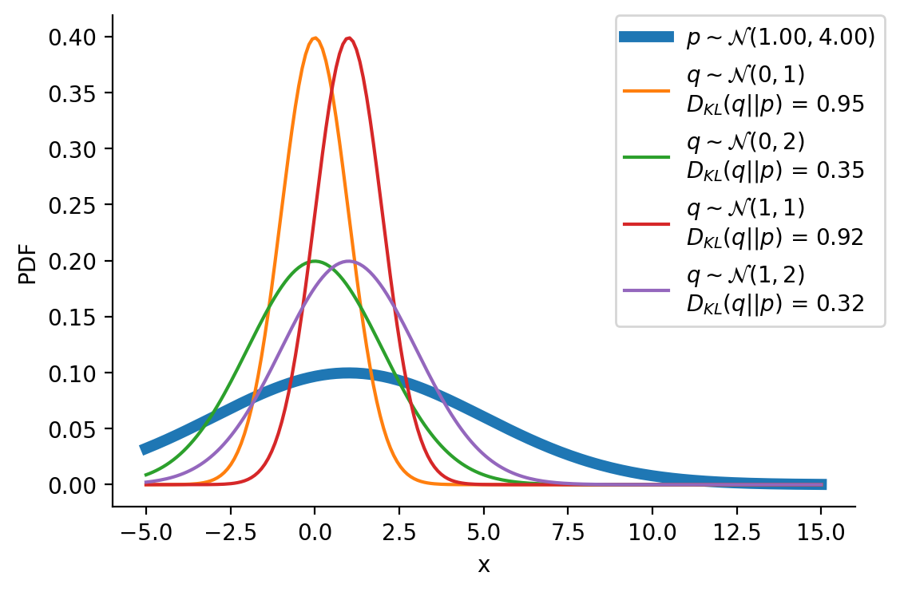
Or, we could use continuous optimization to find the best loc and scale parameters for q.
class TrainableNormal(torch.nn.Module):
def __init__(self, loc, scale):
super().__init__()
self.loc = nn.Parameter(torch.tensor(loc))
raw_scale = torch.log(torch.expm1(torch.tensor(scale)))
self.raw_scale = nn.Parameter(raw_scale)
def forward(self, X=None):
scale = torch.functional.F.softplus(self.raw_scale)
return dist.Normal(loc=self.loc, scale=scale, validate_args=False)
def __repr__(self):
return f"TrainableNormal(loc={self.loc.item():0.2f}, scale={torch.functional.F.softplus(self.raw_scale).item():0.2f})"
def loss_fn(model_output, output, p):
to_learn_dist = model_output
return dist.kl_divergence(to_learn_dist, p)
loc = 4.0
scale = 0.5
model = TrainableNormal(loc=loc, scale=scale)
loc_array = [torch.tensor(loc)]
scale_array = [torch.tensor(scale)]
loss_array = [loss_fn(model(), None, p).item()]
opt = torch.optim.Adam(model.parameters(), lr=0.05)
epochs = 100
for i in range(4):
(iter_losses, epoch_losses), state_dict_list = train_fn(model, loss_fn=loss_fn, loss_fn_kwargs={"p": p}, optimizer=opt, epochs=epochs, verbose=False, return_state_dict=True)
loss_array.extend(epoch_losses)
loc_array.extend([state_dict["loc"] for state_dict in state_dict_list])
scale_array.extend([torch.functional.F.softplus(state_dict["raw_scale"]) for state_dict in state_dict_list])
print(
f"Iteration: {i*epochs}, Loss: {epoch_losses[-1]:0.2f}, Loc: {loc_array[-1]:0.2f}, Scale: {scale_array[-1]:0.2f}"
)Iteration: 0, Loss: 0.05, Loc: 1.06, Scale: 3.15
Iteration: 100, Loss: 0.00, Loc: 1.00, Scale: 3.92
Iteration: 200, Loss: 0.00, Loc: 1.00, Scale: 4.00
Iteration: 300, Loss: 0.00, Loc: 1.00, Scale: 4.00plt.plot(torch.tensor(scale_array), label = 'scale')
plt.plot(torch.tensor(loc_array), label = 'loc')
plt.plot(torch.tensor(loss_array), label = 'loss')
plt.legend()
plt.xlabel("Iteration")Text(0.5, 0, 'Iteration')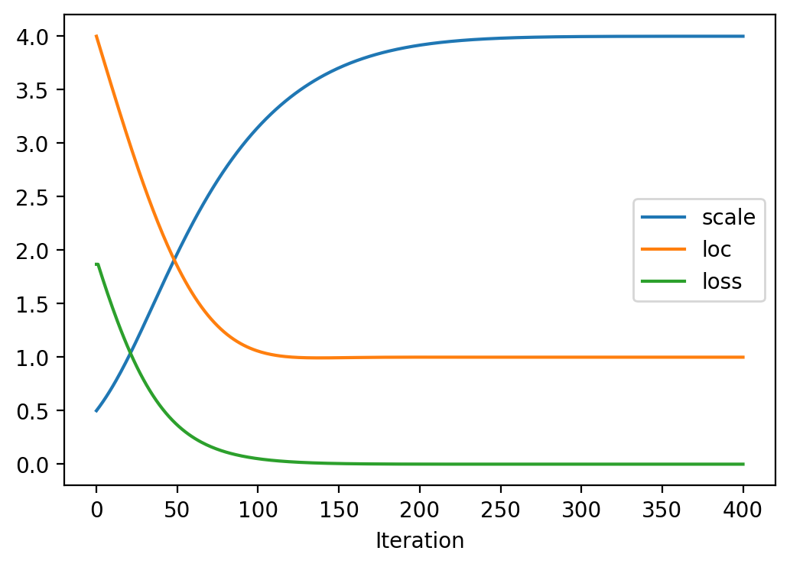
After training, we are able to recover the scale and loc very close to that of \(p\)
Animation!
def animate(i):
fig = plt.figure(tight_layout=True, figsize=(8, 4))
ax = fig.gca()
ax.clear()
ax.plot(z_values, prob_values_p, label=r"$p\sim\mathcal{N}(1.00, 4.00)$", lw=5)
to_learn_q = dist.Normal(loc = loc_array[i], scale=scale_array[i])
loss = loss_array[i]
loc = loc_array[i].item()
scale = scale_array[i].item()
ax.plot(
z_values.numpy(),
torch.exp(to_learn_q.log_prob(z_values)).numpy(),
label=rf"$q\sim \mathcal{{N}}({loc:0.2f}, {scale:0.2f})$",
)
ax.set_title(rf"Iteration: {i}, $D_{{KL}}(q||p)$: {loss:0.2f}")
ax.legend(bbox_to_anchor=(1.1, 1), borderaxespad=0)
ax.set_ylim((0, 1))
ax.set_xlim((-5, 15))
ax.set_xlabel("x")
ax.set_ylabel("PDF")
sns.despine()
@interact(i=(0, len(loc_array) - 1))
def show_animation(i=0):
animate(i)Finding the KL divergence for two distributions from different families
Let us rework our example with p coming from a mixture of Gaussian distribution and q being Normal.
p_s = dist.MixtureSameFamily(
mixture_distribution=dist.Categorical(probs=torch.tensor([0.5, 0.5])),
component_distribution=dist.Normal(
loc=torch.tensor([-0.2, 1]), scale=torch.tensor([0.4, 0.5]) # One for each component.
),
)
p_sMixtureSameFamily(
Categorical(probs: torch.Size([2]), logits: torch.Size([2])),
Normal(loc: torch.Size([2]), scale: torch.Size([2])))plt.plot(z_values, torch.exp(p_s.log_prob(z_values)))
sns.despine()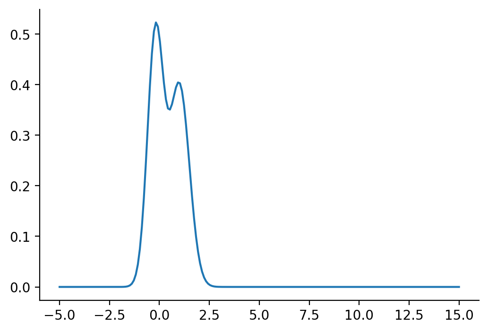
Let us create two Normal distributions q_1 and q_2 and plot them to see which looks closer to p_s.
q_1 = create_q(3, 1)
q_2 = create_q(3, 4.5)prob_values_p_s = torch.exp(p_s.log_prob(z_values))
prob_values_q_1 = torch.exp(q_1.log_prob(z_values))
prob_values_q_2 = torch.exp(q_2.log_prob(z_values))
plt.plot(z_values, prob_values_p_s, label=r"MOG")
plt.plot(z_values, prob_values_q_1, label=r"$q_1\sim\mathcal{N} (3, 1.0)$")
plt.plot(z_values, prob_values_q_2, label=r"$q_2\sim\mathcal{N} (3, 4.5)$")
sns.despine()
plt.legend()
plt.xlabel("x")
plt.ylabel("PDF")
plt.tight_layout()
plt.savefig(
"dkl-different.png",
dpi=150,
)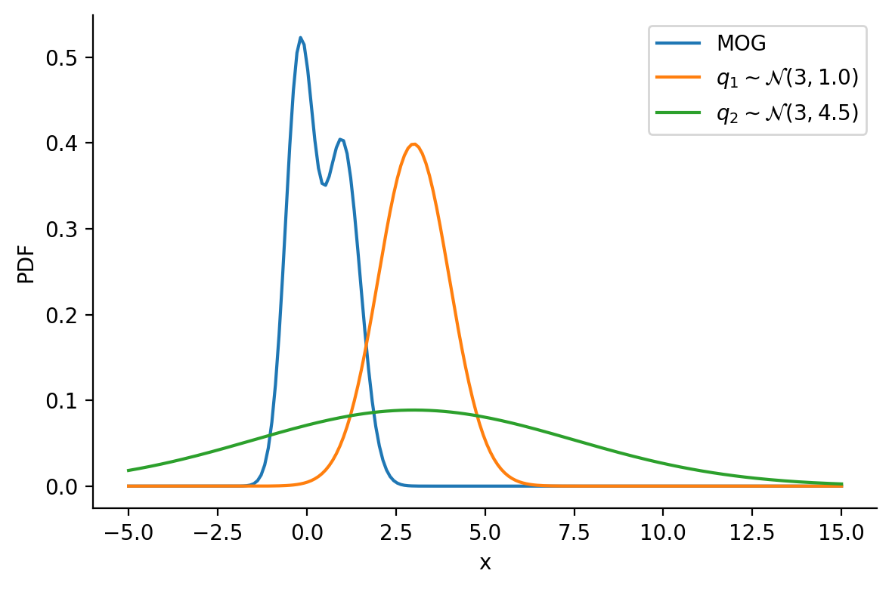
try:
dist.kl_divergence(q_1, p_s)
except NotImplementedError:
print(f"KL divergence not implemented between {q_1.__class__} and {p_s.__class__}")KL divergence not implemented between <class 'torch.distributions.normal.Normal'> and <class 'torch.distributions.mixture_same_family.MixtureSameFamily'>As we see above, we can not compute the KL divergence directly. The core idea would now be to leverage the Monte Carlo sampling and generating the expectation. The following function does that.
def kl_via_sampling(q, p, n_samples=100000):
# Get samples from q
sample_set = q.sample([n_samples])
# Use the definition of KL-divergence
return torch.mean(q.log_prob(sample_set) - p.log_prob(sample_set))dist.kl_divergence(q_1, q_2)tensor(1.0288)kl_via_sampling(q_1, q_2)tensor(1.0287)kl_via_sampling(q_1, p_s), kl_via_sampling(q_2, p_s)(tensor(9.4532), tensor(44.9828))As we can see from KL divergence calculations, q_1 is closer to our Gaussian mixture distribution.
Optimizing the KL divergence for two distributions from different families
We saw that we can calculate the KL divergence between two different distribution families via sampling. But, as we did earlier, will we be able to optimize the parameters of our target surrogate distribution? The answer is No! As we have introduced sampling. However, there is still a way – by reparameterization!
Our surrogate q in this case is parameterized by loc and scale. The key idea here is to generate samples from a standard normal distribution (loc=0, scale=1) and then apply an affine transformation on the generated samples to get the samples generated from q. See my other post on sampling from normal distribution to understand this better.
The loss can now be thought of as a function of loc and scale.
Backpropagation through sampling
Version 1: Default
import torch.nn as nn
loc = nn.Parameter(torch.tensor(2.0, requires_grad=True))
scale = nn.Parameter(torch.tensor(0.5, requires_grad=True))
q = dist.Normal(loc, scale)
s = q.sample()
try:
s.backward()
print(f"Gradient of loc: {loc.grad}")
print(f"Gradient of scale: {scale.grad}")
except Exception as e:
print(f"Error: {e}")Error: element 0 of tensors does not require grad and does not have a grad_fnfrom torchviz import make_dot
make_dot(s, params={"loc": loc, "scale": scale},
show_attrs=True, show_saved=True)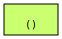
loc = torch.tensor(2.0, requires_grad=True)
scale = torch.tensor(0.5, requires_grad=True)
q = dist.Normal(loc, scale)
s = q.sample()
try:
q.log_prob(s).backward()
print(f"Gradient of loc: {loc.grad}")
print(f"Gradient of scale: {scale.grad}")
except Exception as e:
print(f"Error: {e}")Gradient of loc: 2.0397958755493164
Gradient of scale: 0.0803835391998291make_dot(q.log_prob(s), params={"loc": loc, "scale": scale},
show_attrs=False,
show_saved=False)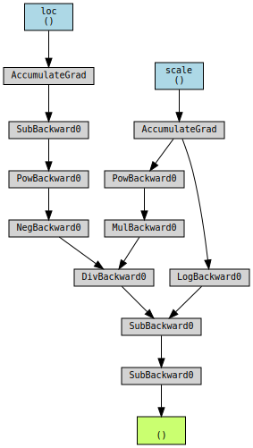
Version 2: Using the reparameterization trick manually
torch.manual_seed(42)
std_normal = dist.Normal(0, 1)
loc = torch.tensor(2.0, requires_grad=True)
scale = torch.tensor(0.5, requires_grad=True)
eps = std_normal.sample()
z = loc + scale * eps
try:
q.log_prob(z).backward()
print(f"Gradient of loc: {loc.grad}")
print(f"Gradient of scale: {scale.grad}")
print(f"Sample from standard normal: {eps}")
except Exception as e:
print(f"Error: {e}")Gradient of loc: -0.6733808517456055
Gradient of scale: -0.22672083973884583
Sample from standard normal: 0.33669036626815796make_dot(z, params={"loc": loc, "scale": scale},
show_attrs=False, show_saved=False)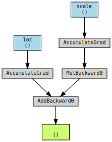
Version 3: Using rsample instead of sample
torch.manual_seed(42)
loc = torch.tensor(2.0, requires_grad=True)
scale = torch.tensor(0.5, requires_grad=True)
q = dist.Normal(loc, scale)
s = q.rsample()
try:
q.log_prob(s).backward()
print(f"Gradient of loc: {loc.grad}")
print(f"Gradient of scale: {scale.grad}")
except Exception as e:
print(f"Error: {e}")Gradient of loc: 0.0
Gradient of scale: -1.9999998807907104Original formulation (not differentiable)
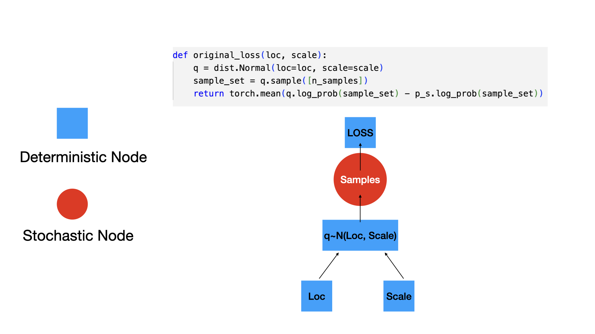
Reparameterized formulation (differentiable)
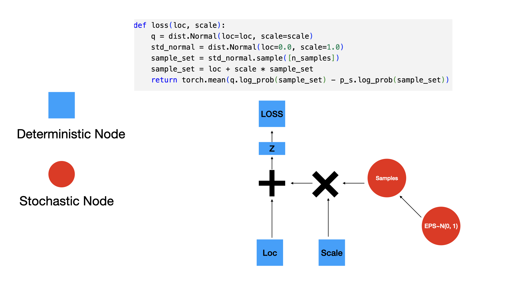
n_samples = 5000
def original_loss_rsample(model_output, output, p_s):
q = model_output
sample_set = q.rsample([n_samples])
return torch.mean(q.log_prob(sample_set) - p_s.log_prob(sample_set))
def loss(model_output, output, p_s):
q = model_output
loc = q.loc
scale = q.scale
std_normal = dist.Normal(loc=0.0, scale=1.0)
sample_set = std_normal.sample([n_samples])
sample_set = loc + scale * sample_set
return torch.mean(q.log_prob(sample_set) - p_s.log_prob(sample_set))Having defined the loss above, we can now optimize loc and scale to minimize the KL-divergence.
def optimize_loc_scale(loss_fn):
loc = 6.0
scale = 0.1
model = TrainableNormal(loc=loc, scale=scale)
loc_array = [torch.tensor(loc)]
scale_array = [torch.tensor(scale)]
loss_array = [loss_fn(model(), None, p_s).item()]
opt = torch.optim.Adam(model.parameters(), lr=0.05)
epochs = 500
for i in range(7):
(iter_losses, epoch_losses), state_dict_list = train_fn(model, loss_fn=loss_fn, loss_fn_kwargs={"p_s": p_s}, optimizer=opt, epochs=epochs, verbose=False, return_state_dict=True)
loss_array.extend(epoch_losses)
loc_array.extend([state_dict["loc"] for state_dict in state_dict_list])
scale_array.extend([torch.functional.F.softplus(state_dict["raw_scale"]) for state_dict in state_dict_list])
print(
f"Iteration: {i*epochs}, Loss: {epoch_losses[-1]:0.2f}, Loc: {loc_array[-1]:0.2f}, Scale: {scale_array[-1]:0.2f}"
)
return loc_array, scale_array, loss_arrayloc_array, scale_array, loss_array = optimize_loc_scale(original_loss_rsample)Iteration: 0, Loss: 0.05, Loc: 0.43, Scale: 0.72
Iteration: 500, Loss: 0.06, Loc: 0.43, Scale: 0.72
Iteration: 1000, Loss: 0.05, Loc: 0.43, Scale: 0.72
Iteration: 1500, Loss: 0.05, Loc: 0.43, Scale: 0.72
Iteration: 2000, Loss: 0.06, Loc: 0.43, Scale: 0.71
Iteration: 2500, Loss: 0.05, Loc: 0.43, Scale: 0.72
Iteration: 3000, Loss: 0.06, Loc: 0.43, Scale: 0.74loc_array, scale_array, loss_array = optimize_loc_scale(loss)Iteration: 0, Loss: 0.06, Loc: 0.43, Scale: 0.72
Iteration: 500, Loss: 0.07, Loc: 0.43, Scale: 0.72
Iteration: 1000, Loss: 0.06, Loc: 0.43, Scale: 0.71
Iteration: 1500, Loss: 0.05, Loc: 0.43, Scale: 0.73
Iteration: 2000, Loss: 0.05, Loc: 0.43, Scale: 0.70
Iteration: 2500, Loss: 0.06, Loc: 0.43, Scale: 0.71
Iteration: 3000, Loss: 0.05, Loc: 0.42, Scale: 0.72q_s = TrainableNormal(loc=loc_array[-1], scale=scale_array[-1])()
q_s/tmp/ipykernel_1389396/4271825319.py:4: UserWarning: To copy construct from a tensor, it is recommended to use sourceTensor.clone().detach() or sourceTensor.clone().detach().requires_grad_(True), rather than torch.tensor(sourceTensor).
self.loc = nn.Parameter(torch.tensor(loc))
/tmp/ipykernel_1389396/4271825319.py:5: UserWarning: To copy construct from a tensor, it is recommended to use sourceTensor.clone().detach() or sourceTensor.clone().detach().requires_grad_(True), rather than torch.tensor(sourceTensor).
raw_scale = torch.log(torch.expm1(torch.tensor(scale)))Normal(loc: Parameter containing:
tensor(0.4250, requires_grad=True), scale: 0.716407299041748)prob_values_p_s = torch.exp(p_s.log_prob(z_values))
prob_values_q_s = torch.exp(q_s.log_prob(z_values))
plt.plot(z_values, prob_values_p_s.detach(), label=r"p")
plt.plot(z_values, prob_values_q_s.detach(), label=r"q")
sns.despine()
plt.legend()
plt.xlabel("x")
plt.ylabel("PDF")Text(0, 0.5, 'PDF')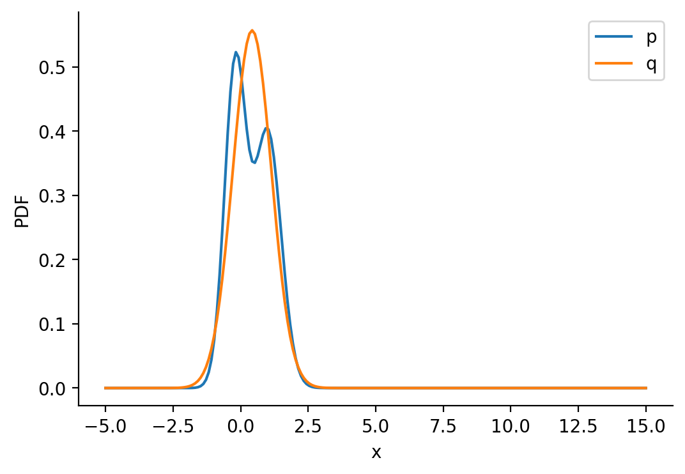
prob_values_p_s = torch.exp(p_s.log_prob(z_values))
def a(iteration):
fig = plt.figure(tight_layout=True, figsize=(8, 4))
ax = fig.gca()
loc = loc_array[iteration]
scale = scale_array[iteration]
q_s = dist.Normal(loc=loc, scale=scale)
prob_values_q_s = torch.exp(q_s.log_prob(z_values))
ax.plot(z_values, prob_values_p_s, label=r"p")
ax.plot(z_values, prob_values_q_s, label=r"q")
ax.set_title(f"Iteration {iteration}, Loss: {loss_array[iteration]:0.2f}")
ax.set_ylim((-0.05, 1.05))
ax.legend()
sns.despine()
@interact(i=(0, len(loc_array) - 1))
def show_animation(i=0):
return a(i)plt.plot(loc_array, label="loc")
plt.plot(scale_array, label="scale")
plt.xlabel("Iterations")
sns.despine()
plt.legend()<matplotlib.legend.Legend at 0x7fa021101650>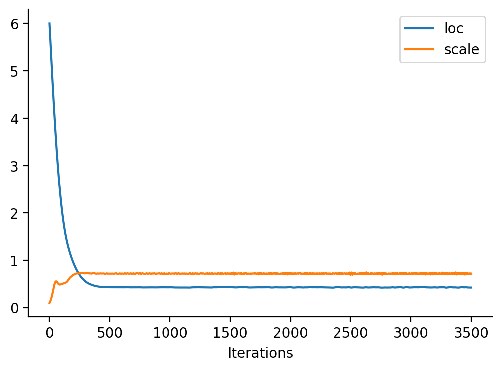
ELBO
Coin toss example
def log_prior(theta):
return dist.Beta(5, 3, validate_args=False).log_prob(theta)
def log_likelihood(theta, data):
return dist.Bernoulli(theta, validate_args=False).log_prob(data).sum()
def log_joint(theta, data):
return log_likelihood(theta, data) + log_prior(theta)
def true_log_posterior(theta, data):
return dist.Beta(5 + data.sum(), 3 + len(data) - data.sum(), validate_args=False).log_prob(theta)theta_values = torch.linspace(0, 1, 200)
# Generate data: 17 heads out of 30 tosses
data = torch.ones(17)
data = torch.cat([data, torch.zeros(13)])
print(data.shape)
try:
ll = log_likelihood(theta_values, data)
except Exception as e:
print(f"Error: {e}")torch.Size([30])
Error: The size of tensor a (200) must match the size of tensor b (30) at non-singleton dimension 0try:
ll = torch.vmap(lambda theta: log_likelihood(theta, data))(theta_values)
except Exception as e:
print(f"Error: {e}")# Plot prior
fig, ax = plt.subplots(2, 1, sharex=True, figsize=(4, 3))
ax[0].plot(theta_values, torch.exp(log_prior(theta_values)), label="Prior", color="C0")
# Plot likelihood
ax[1].plot(theta_values, ll, label="Likelihood", color="C1")
# Plot posterior
ax[0].plot(theta_values, torch.exp(true_log_posterior(theta_values, data)), label="Posterior", color="C2")
ax[1].set_xlabel(r"$\theta$")
# Legend outside the plot
fig.legend(bbox_to_anchor=(1.4, 1), borderaxespad=0)<matplotlib.legend.Legend at 0x7fa020448490>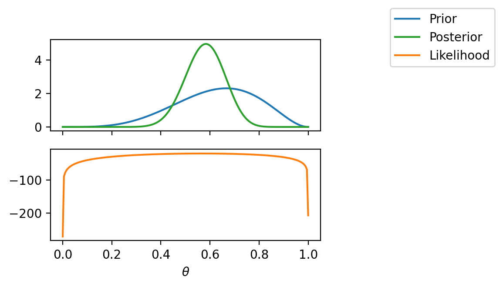
Now, let us create a target distribution q
\[q(\theta) = \text{Beta}(\alpha, \beta)\]
def neg_elbo(log_joint_fn, q, data, n_mc_samples=100):
# Sample from q
theta = q.rsample([n_mc_samples])
# Compute the log probabilities
log_q_theta = q.log_prob(theta)
log_joint = torch.vmap(lambda theta: log_joint_fn(theta, data))(theta)
# Compute ELBO as the difference of log probabilities
# print(log_joint, log_q_theta)
elbo = log_joint - log_q_theta
return -elbo.mean()neg_elbo(log_joint, dist.Beta(0.1, 2), data=data)tensor(188.3255)neg_elbo(log_joint, dist.Beta(5 + data.sum(), 3 + len(data) - data.sum()), data=data)tensor(21.3972)alpha = 45.0
beta = 45.0
class TrainableBeta(AstraModel):
def __init__(self, alpha, beta):
super().__init__()
self.alpha = nn.Parameter(torch.tensor(alpha))
self.beta = nn.Parameter(torch.tensor(beta))
def forward(self, X=None):
return dist.Beta(self.alpha, self.beta, validate_args=False)
def loss_fn(model_output, output):
q = model_output
data = output
return neg_elbo(log_joint, q, data)
alpha_array = []
beta_array = []
loss_array = []
model = TrainableBeta(alpha, beta)
opt = torch.optim.Adam(model.parameters(), lr=0.05)
epochs = 400
for i in range(10):
# opt.zero_grad()
(iter_losses, epoch_losses), state_dict_list = train_fn(model, output=data, loss_fn=loss_fn, optimizer=opt, epochs=epochs, verbose=False, return_state_dict=True)
loss_array.extend(epoch_losses)
alpha_array.extend([state_dict["alpha"] for state_dict in state_dict_list])
beta_array.extend([state_dict["beta"] for state_dict in state_dict_list])
print(model.alpha.item(), model.beta.item(), loss_array[-1])50.2536506652832 36.2883186340332 21.54409408569336
46.11083984375 33.47718811035156 21.542587280273438
40.47787857055664 29.384883880615234 21.4658203125
34.14217758178711 24.53378677368164 21.41468048095703
28.26129150390625 20.57001304626465 21.416034698486328
24.69085121154785 18.057777404785156 21.396530151367188
23.145231246948242 16.898151397705078 21.405750274658203
22.396196365356445 16.42294692993164 21.39972496032715
22.189348220825195 16.165355682373047 21.397798538208008
22.17797088623047 15.884150505065918 21.395658493041992# Plot the posterior with the true posterior
fig, ax = plt.subplots(1, 1, figsize=(4, 3))
alpha = model.alpha.item()
beta = model.beta.item()
with torch.no_grad():
q = model()
ax.plot(theta_values, torch.exp(true_log_posterior(theta_values, data)), label=fr"True posterior: $Beta({data.sum()+5}, {len(data)+3-data.sum()})$")
ax.plot(theta_values, torch.exp(q.log_prob(theta_values)), ls='--', label=fr"Learned posterior: $Beta({alpha:0.2f}, {beta:0.2f})$")
plt.legend(bbox_to_anchor=(1.1, 1), borderaxespad=0)<matplotlib.legend.Legend at 0x7fa011e48cd0>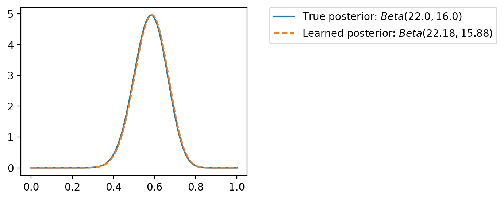
import pyro
import pyro.distributions as py_dist
from pyro.infer import SVI, Trace_ELBO
def model(data):
theta = pyro.sample("theta", py_dist.Beta(torch.tensor(5.0), torch.tensor(3.0)))
with pyro.plate("data", len(data)):
pyro.sample("obs", py_dist.Bernoulli(theta), obs=data)
def guide(data):
alpha_q = pyro.param("alpha_q", torch.tensor(45.0))
beta_q = pyro.param("beta_q", torch.tensor(45.0))
pyro.sample("theta", py_dist.Beta(alpha_q, beta_q))
pyro.clear_param_store()
# Optimizer
adam_params = {"lr": 0.05}
optimizer = pyro.optim.Adam(adam_params)
# SVI
t = Trace_ELBO(num_particles=5)
svi = SVI(model, guide, optimizer, loss=t)t.num_particles5svi = SVI(model, guide, optimizer, loss=t)
for step in range(8001):
loss = svi.step(data)
if step % 400 == 0:
print(f"Step {step} | Loss: {loss:0.2f} | alpha: {pyro.param('alpha_q').item():0.2f} | beta: {pyro.param('beta_q').item():0.2f}")Step 0 | Loss: 21.66 | alpha: 45.05 | beta: 44.95
Step 400 | Loss: 21.69 | alpha: 50.92 | beta: 35.95
Step 800 | Loss: 21.60 | alpha: 47.69 | beta: 34.25
Step 1200 | Loss: 21.53 | alpha: 44.25 | beta: 32.45
Step 1600 | Loss: 21.29 | alpha: 41.77 | beta: 29.58
Step 2000 | Loss: 21.55 | alpha: 38.87 | beta: 27.68
Step 2400 | Loss: 21.43 | alpha: 35.87 | beta: 26.30
Step 2800 | Loss: 21.46 | alpha: 33.70 | beta: 24.43
Step 3200 | Loss: 21.31 | alpha: 31.49 | beta: 23.31
Step 3600 | Loss: 21.51 | alpha: 29.69 | beta: 21.95
Step 4000 | Loss: 21.41 | alpha: 28.48 | beta: 20.82
Step 4400 | Loss: 21.46 | alpha: 27.65 | beta: 19.81
Step 4800 | Loss: 21.31 | alpha: 26.54 | beta: 18.74
Step 5200 | Loss: 21.43 | alpha: 25.50 | beta: 18.48
Step 5600 | Loss: 21.32 | alpha: 24.82 | beta: 18.13
Step 6000 | Loss: 21.39 | alpha: 24.52 | beta: 17.72
Step 6400 | Loss: 21.43 | alpha: 23.89 | beta: 17.56
Step 6800 | Loss: 21.43 | alpha: 24.07 | beta: 17.03
Step 7200 | Loss: 21.42 | alpha: 23.48 | beta: 17.08
Step 7600 | Loss: 21.42 | alpha: 23.33 | beta: 16.81
Step 8000 | Loss: 21.41 | alpha: 22.91 | beta: 16.75# grab the learned variational parameters
alpha_q = pyro.param("alpha_q").item()
beta_q = pyro.param("beta_q").item()alpha_q, beta_q(22.907527923583984, 16.748062133789062)plt.plot(theta_values, torch.exp(true_log_posterior(theta_values, data)), label=fr"True posterior: $Beta({data.sum()+5}, {len(data)+3-data.sum()})$")
plt.plot(theta_values, torch.exp(q.log_prob(theta_values)), label=fr"Learned posterior (Our): $Beta({alpha:0.2f}, {beta:0.2f})$")
plt.plot(theta_values, torch.exp(py_dist.Beta(alpha_q, beta_q).log_prob(theta_values)), label=fr"Learned posterior (Pyro): $Beta({alpha_q:0.2f}, {beta_q:0.2f})$")
# legend outside the plot
plt.legend(bbox_to_anchor=(1.1, 1), borderaxespad=0)<matplotlib.legend.Legend at 0x7fa011ce8190>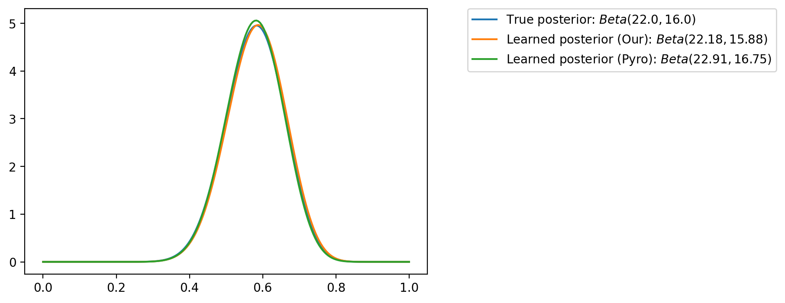
Linear regression
N = 200
x_lin = torch.linspace(-5, 5, N)
f_true = lambda x: 3*x + 4
eps = 5*dist.Normal(0, 1).sample([N])
y = f_true(x_lin) + eps
plt.plot(x_lin, f_true(x_lin), label=r"$f(x)$")
plt.plot(x_lin, y, "o", label=r"$y$", alpha=0.5)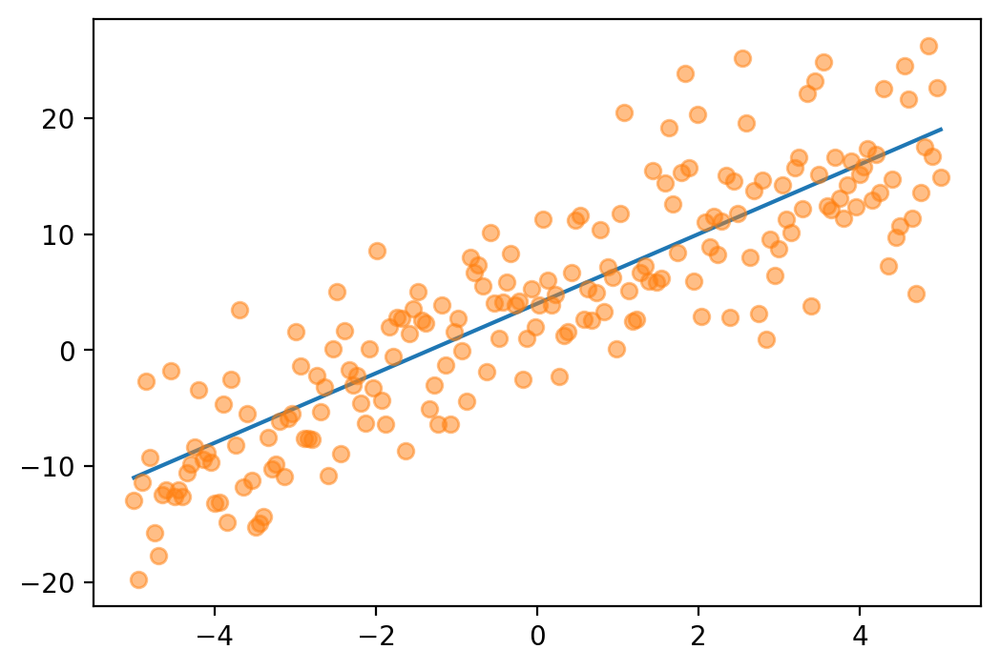
def log_prior(theta):
return dist.MultivariateNormal(torch.zeros(2),
torch.eye(2),
validate_args=False).log_prob(theta)
def log_likelihood(theta, x, y):
return dist.MultivariateNormal(theta[0] + theta[1] * x, torch.eye(N),
validate_args=False).log_prob(y).sum()
def log_joint(theta, x, y):
return log_likelihood(theta, x, y) + log_prior(theta)
log_prior(torch.tensor([0.0, 0.0])), log_prior(torch.tensor([4.0, 3.0])), log_prior(torch.tensor([4.0, 0.0]))(tensor(-1.8379), tensor(-14.3379), tensor(-9.8379))log_likelihood(torch.tensor([0.0, 0.0]), x_lin, y), log_likelihood(torch.tensor([4.0, 3.0]), x_lin, y), log_likelihood(torch.tensor([4.0, 0.0]), x_lin, y)(tensor(-11948.3555), tensor(-2697.1028), tensor(-10563.2061))def neg_elbo_x_y(log_joint_fn, q, x, y, n_mc_samples=100):
# Sample from q
theta = q.rsample([n_mc_samples])
# Compute the log probabilities
log_q_theta = q.log_prob(theta).sum(dim=-1)
log_joint = torch.vmap(lambda theta: log_joint_fn(theta, x, y))(theta)
# Compute ELBO as the difference of log probabilities
# print(log_joint.shape, log_q_theta.shape)
elbo = log_joint - log_q_theta
return -elbo.mean()neg_elbo_x_y(log_joint, dist.Normal(torch.zeros(2), torch.ones(2), validate_args=False), x_lin, y), neg_elbo_x_y(log_joint, dist.Normal(torch.tensor([4.0, 3.0]), torch.ones(2), validate_args=False), x_lin, y), neg_elbo_x_y(log_joint, dist.Normal(torch.tensor([4.0, 0.0]), torch.ones(2), validate_args=False), x_lin, y)(tensor(12558.4824), tensor(3719.2258), tensor(10860.5801))def loss_fn(model_output, output, x):
q = model_output
y = output
# print(x.shape, y.shape)
return neg_elbo_x_y(log_joint, q, x, y)
loc_array = []
scale_array = []
loss_array = []
model = TrainableNormal(loc=[0.0, 0.0], scale=[0.1, 0.1])
opt = torch.optim.Adam(model.parameters(), lr=0.05)
epochs = 400
for i in range(10):
(iter_losses, epoch_losses), state_dict_list = train_fn(model, output=y, loss_fn=loss_fn, loss_fn_kwargs={"x": x_lin}, optimizer=opt, epochs=epochs, verbose=False, return_state_dict=True)
loss_array.extend(epoch_losses)
loc_array.extend([state_dict["loc"] for state_dict in state_dict_list])
scale_array.extend([torch.functional.F.softplus(state_dict["raw_scale"]) for state_dict in state_dict_list])
print(
f"Iteration: {i*epochs}, Loss: {epoch_losses[-1]:0.2f}, Loc: {loc_array[-1]}, Scale: {scale_array[-1]}"
)
Iteration: 0, Loss: 2705.07, Loc: tensor([3.7121, 3.0564]), Scale: tensor([0.0711, 0.0252])
Iteration: 400, Loss: 2705.07, Loc: tensor([3.7135, 3.0555]), Scale: tensor([0.0707, 0.0244])
Iteration: 800, Loss: 2705.07, Loc: tensor([3.7129, 3.0558]), Scale: tensor([0.0708, 0.0244])
Iteration: 1200, Loss: 2705.07, Loc: tensor([3.7117, 3.0553]), Scale: tensor([0.0709, 0.0242])
Iteration: 1600, Loss: 2705.07, Loc: tensor([3.7119, 3.0540]), Scale: tensor([0.0721, 0.0243])
Iteration: 2000, Loss: 2705.08, Loc: tensor([3.7177, 3.0562]), Scale: tensor([0.0685, 0.0244])
Iteration: 2400, Loss: 2705.07, Loc: tensor([3.7122, 3.0555]), Scale: tensor([0.0722, 0.0243])
Iteration: 2800, Loss: 2705.08, Loc: tensor([3.7158, 3.0519]), Scale: tensor([0.0714, 0.0242])
Iteration: 3200, Loss: 2705.06, Loc: tensor([3.7078, 3.0541]), Scale: tensor([0.0694, 0.0248])
Iteration: 3600, Loss: 2705.09, Loc: tensor([3.7101, 3.0551]), Scale: tensor([0.0722, 0.0243])# Predictive distribution using the learned posterior
n_samples = 1000
q = model()
q_samples = q.sample([n_samples])
print(q_samples.shape)
plt.plot(x_lin, f_true(x_lin), label=r"$f(x)$")
plt.plot(x_lin, y, "o", label=r"$y$", alpha=0.1)
y_hats = []
for i in range(n_samples):
y_hat = q_samples[i, 0] + q_samples[i, 1] * x_lin
y_hats.append(y_hat)
y_hat_mean = torch.stack(y_hats).mean(0)
y_hat_std = torch.stack(y_hats).std(0)
plt.plot(x_lin, y_hat_mean, label=r"$\mathbb{E}[f(x)]$", color='C2')
plt.fill_between(x_lin, y_hat_mean - y_hat_std, y_hat_mean + y_hat_std, alpha=0.3, color='C2')
plt.legend()torch.Size([1000, 2])<matplotlib.legend.Legend at 0x7fa021239750>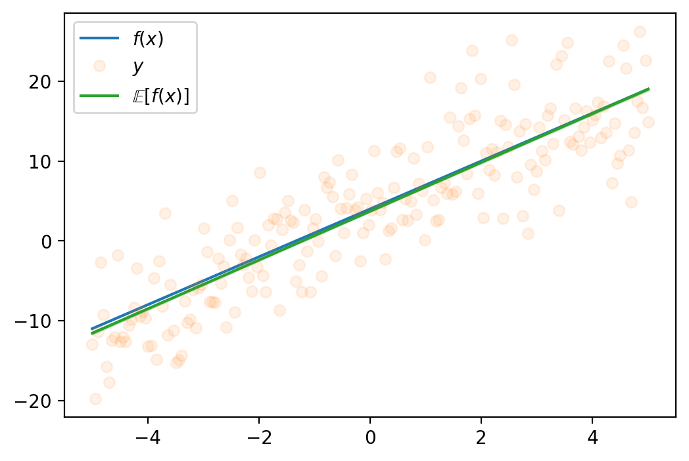
Learning the full covariance matrix
Reference: 1. https://ericmjl.github.io/notes/stats-ml/estimating-a-multivariate-gaussians-parameters-by-gradient-descent/
class LearnableMVN(AstraModel):
def __init__(self, loc, log_L_flat):
super().__init__()
self.loc = nn.Parameter(loc)
self.log_L_flat = nn.Parameter(log_L_flat)
def forward(self, X=None):
L = torch.reshape(self.log_L_flat, (2, 2))
U = torch.triu(L)
cov = U@U.T
return dist.MultivariateNormal(self.loc, cov)
def __repr__(self):
return f"LearnableMVN(loc={self.loc.item():0.2f}, log_L_flat={self.log_L_flat.item():0.2f})"
loc_array = []
cov_array = []
loss_array = []
model = LearnableMVN(loc=torch.tensor([0.0, 0.0]), log_L_flat=torch.tensor([0.1, 0.1, 0.1, 0.1]))
opt = torch.optim.Adam(model.parameters(), lr=0.05)
epochs = 400
for i in range(6):
(iter_losses, epoch_losses), state_dict_list = train_fn(model, output=y, loss_fn=loss_fn, loss_fn_kwargs={"x": x_lin}, optimizer=opt, epochs=epochs, verbose=False, return_state_dict=True)
loss_array.extend(epoch_losses)
loc_array.extend([state_dict["loc"] for state_dict in state_dict_list])
cov_array.extend([state_dict["log_L_flat"] for state_dict in state_dict_list])
L = torch.reshape(cov_array[-1], (2, 2))
cov = L@L.T
print(
f"Iteration: {i*epochs}, Loss: {epoch_losses[-1]:0.2f}, Loc: {loc_array[-1]}, Cov: {cov}"
)Iteration: 0, Loss: 2694.08, Loc: tensor([3.7033, 3.0549]), Cov: tensor([[0.4711, 0.0753],
[0.0753, 0.0767]])
Iteration: 400, Loss: 2692.83, Loc: tensor([3.7217, 3.0509]), Cov: tensor([[0.4738, 0.0665],
[0.0665, 0.0786]])
Iteration: 800, Loss: 2694.50, Loc: tensor([3.7100, 3.0540]), Cov: tensor([[0.5015, 0.0794],
[0.0794, 0.0594]])
Iteration: 1200, Loss: 2696.70, Loc: tensor([3.7286, 3.0559]), Cov: tensor([[0.4520, 0.0622],
[0.0622, 0.0897]])
Iteration: 1600, Loss: 2694.03, Loc: tensor([3.7115, 3.0484]), Cov: tensor([[0.5839, 0.0805],
[0.0805, 0.0751]])
Iteration: 2000, Loss: 2693.38, Loc: tensor([3.7027, 3.0596]), Cov: tensor([[0.4718, 0.0615],
[0.0615, 0.0643]])# Predictive distribution using the learned posterior
n_samples = 1000
q = model()
q_samples = q.sample([n_samples])
print(q_samples.shape)
plt.plot(x_lin, f_true(x_lin), label=r"$f(x)$")
plt.plot(x_lin, y, "o", label=r"$y$", alpha=0.1)
y_hats = []
for i in range(n_samples):
y_hat = q_samples[i, 0] + q_samples[i, 1] * x_lin
y_hats.append(y_hat)
y_hat_mean = torch.stack(y_hats).mean(0)
y_hat_std = torch.stack(y_hats).std(0)
plt.plot(x_lin, y_hat_mean, label=r"$\mathbb{E}[f(x)]$", color='C2')
plt.fill_between(x_lin, y_hat_mean - y_hat_std, y_hat_mean + y_hat_std, alpha=0.3, color='C2')
plt.legend()torch.Size([1000, 2])<matplotlib.legend.Legend at 0x7fa01186f1d0>
# This is intentional stop here
asdjasndjkaNameError: name 'asdjasndjka' is not definedStochastic VI [TODO]
When data is large
We can use stochastic gradient descent to optimize the ELBO. We can use the following formula to compute the gradient of the ELBO.
Now, given our linear regression problem setup, we want to maximize the ELBO.
We can do so by the following. As a simple example, let us assume \(\theta \in R^2\)
- Assume some q. Say, a Normal distribution. So, \(q\sim \mathcal{N}_2\)
- Draw samples from q. Say N samples.
- Initilize ELBO = 0.0
- For each sample:
- Let us assume drawn sample is \([\theta_1, \theta_2]^T\)
- Compute log_prob of prior on \([\theta_1, \theta_2]^T\) or
lp = p.log_prob(θ1, θ2) - Compute log_prob of likelihood on \([\theta_1, \theta_2]^T\) or
ll = l.log_prob(θ1, θ2) - Compute log_prob of q on \([\theta_1, \theta_2]^T\) or
lq = q.log_prob(θ1, θ2) - ELBO = ELBO + (ll+lp-q)
- Return ELBO/N
prior = dist.Normal(loc = 0., scale = 1.)
p = dist.Normal(loc = 5., scale = 1.)samples = p.sample([1000])mu = torch.tensor(1.0, requires_grad=True)
def surrogate_sample(mu):
std_normal = dist.Normal(loc = 0., scale=1.)
sample_std_normal = std_normal.sample()
return mu + sample_std_normalsamples_from_surrogate = surrogate_sample(mu)samples_from_surrogatetensor(0.1894, grad_fn=<AddBackward0>)def logprob_prior(mu):
return prior.log_prob(mu)
lp = logprob_prior(samples_from_surrogate)
def log_likelihood(mu, samples):
di = dist.Normal(loc=mu, scale=1)
return torch.sum(di.log_prob(samples))
ll = log_likelihood(samples_from_surrogate, samples)
ls = surrogate.log_prob(samples_from_surrogate)
def elbo_loss(mu, data_samples):
samples_from_surrogate = surrogate_sample(mu)
lp = logprob_prior(samples_from_surrogate)
ll = log_likelihood(samples_from_surrogate, data_samples)
ls = surrogate.log_prob(samples_from_surrogate)
return -lp - ll + lsmu = torch.tensor(1.0, requires_grad=True)
loc_array = []
loss_array = []
opt = torch.optim.Adam([mu], lr=0.02)
for i in range(2000):
loss_val = elbo_loss(mu, samples)
loss_val.backward()
loc_array.append(mu.item())
loss_array.append(loss_val.item())
if i % 100 == 0:
print(
f"Iteration: {i}, Loss: {loss_val.item():0.2f}, Loc: {mu.item():0.3f}"
)
opt.step()
opt.zero_grad()Iteration: 0, Loss: 11693.85, Loc: 1.000
Iteration: 100, Loss: 2550.90, Loc: 2.744
Iteration: 200, Loss: 2124.30, Loc: 3.871
Iteration: 300, Loss: 2272.48, Loc: 4.582
Iteration: 400, Loss: 2025.17, Loc: 4.829
Iteration: 500, Loss: 1434.45, Loc: 5.079
Iteration: 600, Loss: 1693.33, Loc: 5.007
Iteration: 700, Loss: 1495.89, Loc: 4.957
Iteration: 800, Loss: 2698.28, Loc: 5.149
Iteration: 900, Loss: 2819.85, Loc: 5.117
Iteration: 1000, Loss: 1491.79, Loc: 5.112
Iteration: 1100, Loss: 1767.87, Loc: 4.958
Iteration: 1200, Loss: 1535.30, Loc: 4.988
Iteration: 1300, Loss: 1458.61, Loc: 4.949
Iteration: 1400, Loss: 1400.21, Loc: 4.917
Iteration: 1500, Loss: 2613.42, Loc: 5.073
Iteration: 1600, Loss: 1411.46, Loc: 4.901
Iteration: 1700, Loss: 1587.94, Loc: 5.203
Iteration: 1800, Loss: 1461.40, Loc: 5.011
Iteration: 1900, Loss: 1504.93, Loc: 5.076plt.plot(loss_array)
from numpy.lib.stride_tricks import sliding_window_view
plt.plot(np.average(sliding_window_view(loss_array, window_shape = 10), axis=1))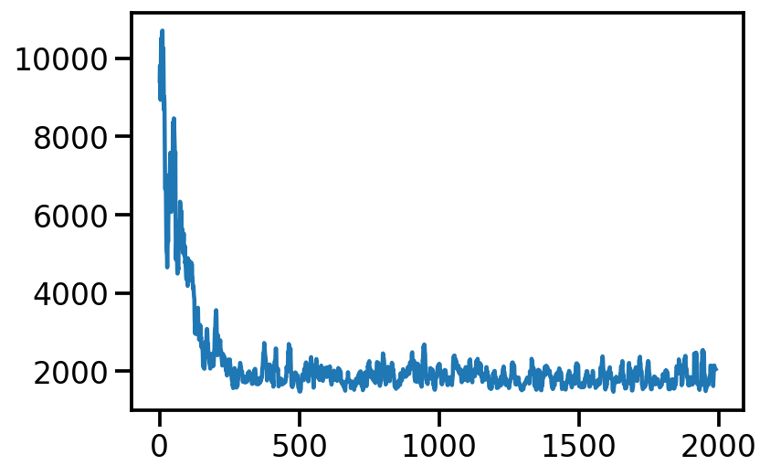
Linear Regression
true_theta_0 = 3.
true_theta_1 = 4.
x = torch.linspace(-5, 5, 100)
y_true = true_theta_0 + true_theta_1*x
y_noisy = y_true + torch.normal(mean = torch.zeros_like(x), std = torch.ones_like(x))
plt.plot(x, y_true)
plt.scatter(x, y_noisy, s=20, alpha=0.5)<matplotlib.collections.PathCollection at 0x1407aaac0>
y_pred = x_dash@theta_prior.sample()
plt.plot(x, y_pred, label="Fit")
plt.scatter(x, y_noisy, s=20, alpha=0.5, label='Data')
plt.legend()<matplotlib.legend.Legend at 0x14064e850>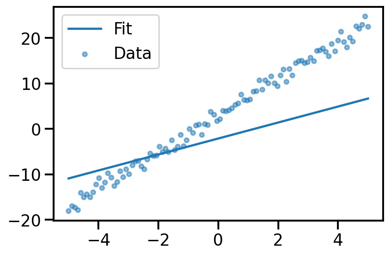
theta_prior = dist.MultivariateNormal(loc = torch.tensor([0., 0.]), covariance_matrix=torch.eye(2))
def likelihood(theta, x, y):
x_dash = torch.vstack((torch.ones_like(x), x)).t()
d = dist.Normal(loc=x_dash@theta, scale=torch.ones_like(x))
return torch.sum(d.log_prob(y))likelihood(theta_prior.sample(), x, y_noisy)tensor(-3558.0769)loc = torch.tensor([-1., 1.], requires_grad=True)
surrogate_mvn = dist.MultivariateNormal(loc = loc, covariance_matrix=torch.eye(2))
surrogate_mvnMultivariateNormal(loc: torch.Size([2]), covariance_matrix: torch.Size([2, 2]))surrogate_mvn.sample()tensor([-1.1585, 2.6212])def surrogate_sample_mvn(loc):
std_normal_mvn = dist.MultivariateNormal(loc = torch.zeros_like(loc), covariance_matrix=torch.eye(loc.shape[0]))
sample_std_normal = std_normal_mvn.sample()
return loc + sample_std_normaldef elbo_loss(loc, x, y):
samples_from_surrogate_mvn = surrogate_sample_mvn(loc)
lp = theta_prior.log_prob(samples_from_surrogate_mvn)
ll = likelihood(samples_from_surrogate_mvn, x, y_noisy)
ls = surrogate_mvn.log_prob(samples_from_surrogate_mvn)
return -lp - ll + lsloc.shape, x.shape, y_noisy.shape(torch.Size([2]), torch.Size([100]), torch.Size([100]))elbo_loss(loc, x, y_noisy)tensor(2850.3154, grad_fn=<AddBackward0>)loc = torch.tensor([-1., 1.], requires_grad=True)
loc_array = []
loss_array = []
opt = torch.optim.Adam([loc], lr=0.02)
for i in range(10000):
loss_val = elbo_loss(loc, x, y_noisy)
loss_val.backward()
loc_array.append(mu.item())
loss_array.append(loss_val.item())
if i % 1000 == 0:
print(
f"Iteration: {i}, Loss: {loss_val.item():0.2f}, Loc: {loc}"
)
opt.step()
opt.zero_grad()Iteration: 0, Loss: 5479.97, Loc: tensor([-1., 1.], requires_grad=True)
Iteration: 1000, Loss: 566.63, Loc: tensor([2.9970, 4.0573], requires_grad=True)
Iteration: 2000, Loss: 362.19, Loc: tensor([2.9283, 3.9778], requires_grad=True)
Iteration: 3000, Loss: 231.23, Loc: tensor([2.8845, 4.1480], requires_grad=True)
Iteration: 4000, Loss: 277.94, Loc: tensor([2.9284, 3.9904], requires_grad=True)
Iteration: 5000, Loss: 1151.51, Loc: tensor([2.9620, 4.0523], requires_grad=True)
Iteration: 6000, Loss: 582.19, Loc: tensor([2.8003, 4.0540], requires_grad=True)
Iteration: 7000, Loss: 178.48, Loc: tensor([2.8916, 3.9968], requires_grad=True)
Iteration: 8000, Loss: 274.76, Loc: tensor([3.0807, 4.1957], requires_grad=True)
Iteration: 9000, Loss: 578.37, Loc: tensor([2.9830, 4.0174], requires_grad=True)learnt_surrogate = dist.MultivariateNormal(loc = loc, covariance_matrix=torch.eye(2))y_samples_surrogate = x_dash@learnt_surrogate.sample([500]).t()
plt.plot(x, y_samples_surrogate, alpha = 0.02, color='k');
plt.scatter(x, y_noisy, s=20, alpha=0.5)<matplotlib.collections.PathCollection at 0x144709a90>
x_dash@learnt_surrogate.loc.detach().t()
theta_sd = torch.linalg.cholesky(learnt_surrogate.covariance_matrix)
#y_samples_surrogate = x_dash@learnt_surrogate.loc.t()
#plt.plot(x, y_samples_surrogate, alpha = 0.02, color='k');
#plt.scatter(x, y_noisy, s=20, alpha=0.5)tensor([-1.6542e+01, -1.6148e+01, -1.5754e+01, -1.5360e+01, -1.4966e+01,
-1.4572e+01, -1.4178e+01, -1.3784e+01, -1.3390e+01, -1.2996e+01,
-1.2602e+01, -1.2208e+01, -1.1814e+01, -1.1420e+01, -1.1026e+01,
-1.0632e+01, -1.0238e+01, -9.8441e+00, -9.4501e+00, -9.0561e+00,
-8.6621e+00, -8.2681e+00, -7.8741e+00, -7.4801e+00, -7.0860e+00,
-6.6920e+00, -6.2980e+00, -5.9040e+00, -5.5100e+00, -5.1160e+00,
-4.7220e+00, -4.3280e+00, -3.9340e+00, -3.5400e+00, -3.1460e+00,
-2.7520e+00, -2.3579e+00, -1.9639e+00, -1.5699e+00, -1.1759e+00,
-7.8191e-01, -3.8790e-01, 6.1054e-03, 4.0011e-01, 7.9412e-01,
1.1881e+00, 1.5821e+00, 1.9761e+00, 2.3702e+00, 2.7642e+00,
3.1582e+00, 3.5522e+00, 3.9462e+00, 4.3402e+00, 4.7342e+00,
5.1282e+00, 5.5222e+00, 5.9162e+00, 6.3102e+00, 6.7043e+00,
7.0983e+00, 7.4923e+00, 7.8863e+00, 8.2803e+00, 8.6743e+00,
9.0683e+00, 9.4623e+00, 9.8563e+00, 1.0250e+01, 1.0644e+01,
1.1038e+01, 1.1432e+01, 1.1826e+01, 1.2220e+01, 1.2614e+01,
1.3008e+01, 1.3402e+01, 1.3796e+01, 1.4190e+01, 1.4584e+01,
1.4978e+01, 1.5372e+01, 1.5766e+01, 1.6160e+01, 1.6554e+01,
1.6948e+01, 1.7342e+01, 1.7736e+01, 1.8131e+01, 1.8525e+01,
1.8919e+01, 1.9313e+01, 1.9707e+01, 2.0101e+01, 2.0495e+01,
2.0889e+01, 2.1283e+01, 2.1677e+01, 2.2071e+01, 2.2465e+01])TODO
- Pyro for linear regression example
- Handle more samples in ELBO
- Reuse some methods
- Add figure on reparameterization
- Linear regression learn covariance also
- Linear regression posterior compare with analytical posterior (refer Murphy book)
- Clean up code and reuse code whwrever possible
- Improve figures and make them consistent
- Add background maths wherever needed
- plot the Directed graphical model (refer Maths ML book and render in Pyro)
- Look at the TFP post on https://www.tensorflow.org/probability/examples/Probabilistic_Layers_Regression
- Show the effect of data size (less data, solution towards prior, else dominated by likelihood)
- Mean Firld (full covariance v/s diagonal) for surrogate
References
- https://www.youtube.com/watch?v=HUsznqt2V5I
- https://www.youtube.com/watch?v=x9StQ8RZ0ag&list=PLISXH-iEM4JlFsAp7trKCWyxeO3M70QyJ&index=9
- https://colab.research.google.com/github/goodboychan/goodboychan.github.io/blob/main/_notebooks/2021-09-13-02-Minimizing-KL-Divergence.ipynb#scrollTo=gd_ev8ceII8q
- https://goodboychan.github.io/python/coursera/tensorflow_probability/icl/2021/09/13/02-Minimizing-KL-Divergence.html
Sandbox
from typing import Sequence
t = torch.tensor([1., 2., 3.])
isinstance(t, Sequence)Falsetorch.Size([])tensor(1.)